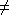
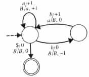
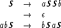
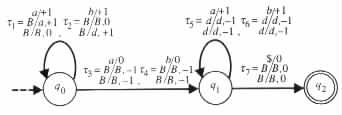
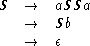

- { (aibici, di) | i ³ 0 }
- { (x, di) | x is in {a, b, c}* and i = (the number of a's in x) = (the number of b's in x) = (the number of c's in x) }
- { (x, di) | x is in {a, b, c}* and i = min(number of a's in x, number of b's in x, number of c's in x) }
- { (xxrevy, ai) | x and y are in {a, b}*, and i = (number of a's in x) = (number of a's in y) }
- { (ai, bj) | j ³ i2 }
- { xyx | x and y are in {a, b}* and |x| ³ 1 }
- { xy | xy is in {a, b, c}*, |x| = |y|, and (the number of a's in x) = (the number of a's in y) }
- { xy | xy is in {a, b, c}*, |x| = |y|, and (the number of a's in x)
 (the
number of a's in y) }
(the
number of a's in y) }
- { aixbi | x is in {a, b}*, and i = (the number of a's in x) = (the number of b's in x) }
- { aibicjdj | i j }
- { aba2b2a3b3 · · · anbn | n ³ 0 }
|
![[PICT]](draw-pic/theory-bk-four-4-E-2.jpg)
|
|
 |
- The problem defined by the following domain and question.
- Domain:
- { (M, x, p) | M is a Turing machine, p is a state of M, and x is an input for M }.
- Question:
- Does M reach state p on input x, for the given instance (M, x, p)?
- Empty-word membership problem.
- Uniform halting problem.
- Emptiness problem.
- Equivalence problem.

Find a Turing machine MG, in accordance with the proof of Theorem 4.6.1, that accepts L(G).
|
 |
Use the construction in the proof of Theorem 4.6.2 to obtain a grammar that generates L(M).
 j }
j }

Find the instance of PCP that corresponds to the instance (G, aba), as determined by the proof of Theorem 4.7.1.